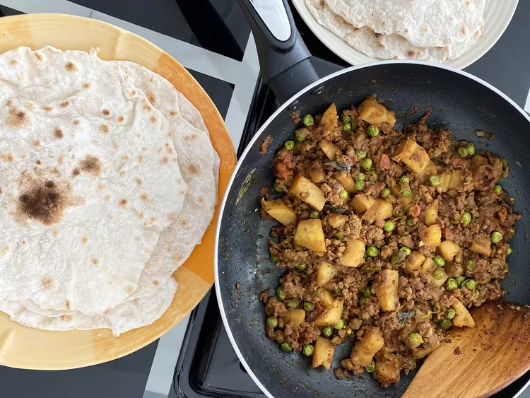

Ground Beef and Potatoes Recipe

Description: "This keema aloo curry is by far my favorite Indian recipe. Inspired by my mom,
who still makes this for me to this day. If you want to try something a little different, I
guarantee you will love this meal."
Ingredients:
- 2 tablespoons extra-virgin olive oil
- 1 extra-large onion, chopped
- 2 tablespoons (Optional)
- 2 pounds lean ground beef
- 4 cloves garlic, minced
- 2 tablespoons grated fresh ginger root
- 1 serrano chile pepper, finely chopped
- 2 teaspoons chopped fresh cilantro
- 1 tablespoon ground coriander
- 1 1/2 teaspoons salt
- 1 1/2 teaspoons ground cumin
- 1 teaspoon ground cayenne pepper
- 1 teaspoon ground turmeric
- 3 potatoes, peeled and diced
- 1 (28 ounce) can diced tomatoes
- 1 cup frozen green peas
- 1 teaspoon garam masal